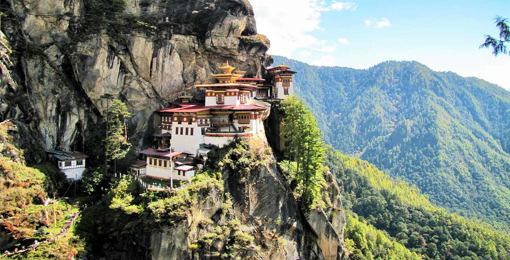
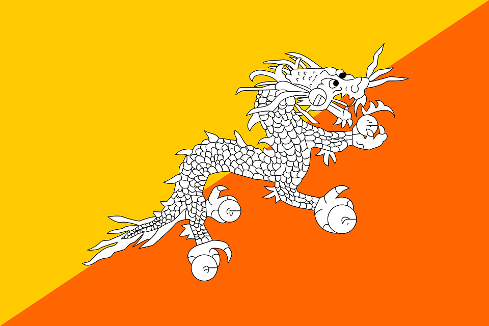
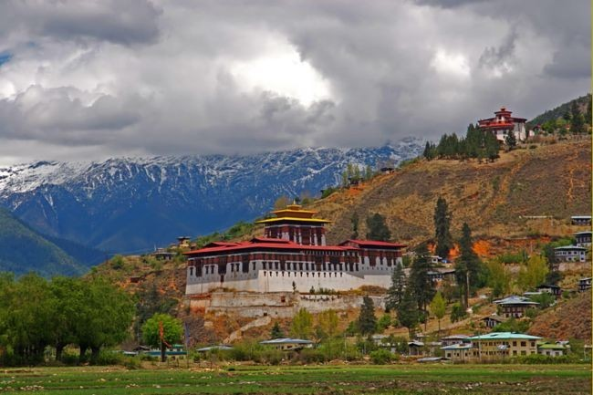

🐉 BUTÁN 🐉

FOTOS
| Monte |
Bandera |
Bután |
|  |
 |
 |
--CURIOSIDADES--
El único país que mide la Felicidad Nacional Bruta.
El Yeti está en Bután.
Su monumento más famoso cuelga de un acantilado a más de 3000 metros de altura.
El animal nacional de Bután es como un puzzle de distintos animales.
Un nombre de origen desconocido.
Guía Bután